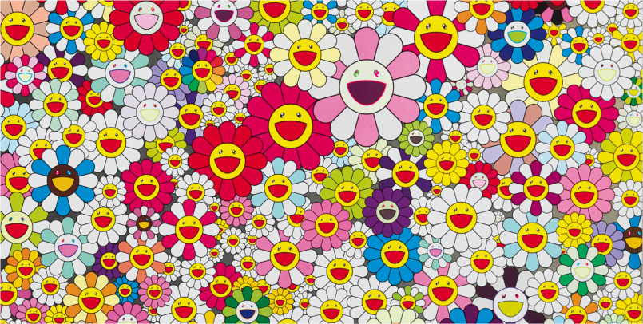
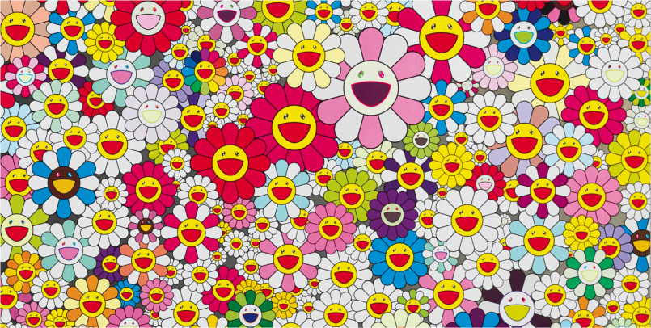

Готовы ответить на вопросы
Мы ничего не нашли
Задайте вопрос в Telegram
По вашему запросу нашли
1. Основы личного бренда
2. Введение в зины
3. Создание зинов для бренда
4. Продвижение зинов
5. Монетизация зинов
1.1 Что такое зин и зачем
он нужен бизнесу
1.2 Основы личного бренда
1.3 Как зины помогают
выразить личный бренд
Одностраничный зин
Многостраничный зин
Создание зина
Печать и склейка
Продвижение
Монетизация
Тетрадь-зин
Вернуться назад
Учебник • Основы личного бренда • Личный бренд
Основы личного бренда
1.1 Личный бренд

5 минут на изучение
Что такое личный бренд, чем он отличается от корпоративного, из каких элементов он состоит и как применяется в творческом бизнесе
Примеры личных брендов
2023–2025
Личный бренд — это публичный образ человека, благодаря которому его узнают и обсуждают в профессиональной среде. В отличие от корпоративного бренда личный бренд строится на вашей личности и её особенностях.
Создание личного бренда помогает выделяться и привлекать внимание тех, кто разделяет ваши ценности и интересы. Первый шаг в развитии личного бренда — это определение ключевых ценностей. Ценности отражают то, что для вас действительно важно, и помогают сформировать стратегию поведения и принятия решений.
В мире, где многие следуют трендам и копируют друг друга, способность предложить нечто новое и аутентичное становится настоящим преимуществом.
Российский художник-каллиграф, основатель каллиграфутуризма, участник стрит-арт-проектов и выставок по всему миру. Работает с арт-проектами по всему миру, устраивает перформансы, мастер-классы, участвует в различных стрит-арт-фестивалях.
Покрас Лампас
Калиграфические работы
Американский уличный фотограф, создатель фотоблога «Humans of New York» с историями жителей Нью-Йорка. На основе блога была опубликована книга Humans of New York, ставшая бестселлером.
Брэндон Стэнтон
Уличные фото
Японский художник, скульптор и дизайнер, автор стиля superflat, основатель компании Kaikai Kiki. Известен стиранием грани между элитарным и массовым искусством.
 
Такаси Мураками
Серия Superflat
На первый взгляд личный бренд может показаться чем-то абстрактным и непонятным. Однако он состоит из 5 вполне конкретных элементов.
Все вместе они создают уникальный образ, который затем нужно согласовать с вашей профессиональной деятельностью.
1. Ценности и убеждения
Ваши ценности отражают индивидуальность и то, что для вас действительно важно
2. Внешний вид
Ваш внешний вид в реальности и цифровой среде, говорит о вашем характере и позиционировании
3. Репутация
Репутация — это совокупность образов, которые складываются о вас у окружающих
4. Профессионализм
Профессионализм демонстрирует потенциальным заказчикам и аудитории вашу компетентность, он проявляется в соблюдении сроков, готовности решать сложные задачи и способности учиться на своих ошибках
5. Стратегия продвижения
Чтобы донести свою уникальность до других, важно использовать продуманную стратегию продвижения, которая включает подходящие каналы и методы рассказа о себе, без стратегии сложно достигнуть целенаправленного и долгосрочного роста
Для чего личный бренд художнику, дизайнеру или фотографу? Он помогает привлечь внимание к творчеству, чтобы работы не пылились «в столе», а находили свою аудиторию.
Сегодня почти у каждого, даже начинающего автора, есть блог или аккаунт, где он показывает свои работы. Но просто профиль — это только начало: именно личный бренд создаёт глубокую связь с аудиторией, помогает людям видеть не только работы, но и личность, стиль и историю автора. Когда зрители начинают видеть автора за его произведениями, они испытывают больший отклик и готовы поддерживать художника. Это помогает строить долгосрочные отношения и создавать сообщество вокруг своих работ, где творчество обретает особую ценность.
Задание
Подумайте, кого вы считаете экспертом в своей творческой сфере, чьи работы и жизнь вы постоянно отслеживаете в социальных сетях. Изучите его аккаунт и ответьте на следующие вопросы:
1. Какая первая ассоциация с его именем у вас возникает?
2. Чем он выделяется среди других представителей этого сообщества?
Обсудить в Telegram
Когда зрители начинают видеть автора за его произведениями, они испытывают больший отклик и готовы поддерживать художника. Это помогает строить долгосрочные отношения и создавать сообщество вокруг своих работ, где творчество обретает особую ценность.